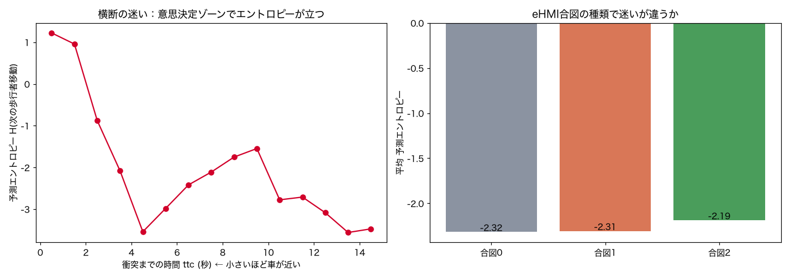

V1 迷い（横断の意思決定エントロピー）
p(次の移動 | 幾何, ttc, eHMI, 履歴, user) の予測エントロピー。渡る/待つが割れる瞬間ほど高い。
-2.034held-out NLL（負の対数尤度, nats。低い＝負に大きいほど当てはまり良い）
0.5最も迷うttc(秒)。0付近＝渡る/待つが割れる意思決定ゾーン
120187ステップ数（規模）
1. このデータは何か
車の合図→歩行者応答。直近5ステップの増分履歴＋車との幾何(距離/方位)＋ttc＋eHMI合図＋個人。
2. 何を・どう学習したか
逐次 NSF p(次の歩行者移動 | 幾何, ttc, eHMI, 履歴, user) を学習し、各ステップの予測エントロピーを推定。ttc（衝突までの時間）と合図の種類で層別。
3. 結果
予測エントロピーは意思決定ゾーン（ttc≈0秒付近）で最大＝渡るか待つかが割れるタイミングで『次の動きが読めない』。合図の種類でも迷いの平均が変わる。

左:ttcごとの予測エントロピー（迷いのタイミング）。右:eHMI合図別の平均迷い。
4. 図の見方
左折線：横=衝突までの時間、縦=次の動きの読めなさ。山＝迷いが立つ意思決定ゾーン。
右棒：合図ごとの平均エントロピー。低い合図＝迷いを減らせている可能性。
5. 解釈と意味・使い道
示すこと：予測エントロピーで『横断をためらう/決めかねる瞬間』を結果を見る前に捉えられる。
なぜNFか：多峰な歩行者応答（渡る/待つ）の広がりをサンプル＋厳密尤度で測れる。
使い道：eHMIデザイン評価（迷いを減らす合図が良い合図）、危険な逡巡の予兆検知。
正直な限界：横断成否ラベル未使用（迷いは応答分布から推定）。個人差大。
条件付き Normalizing Flow（zuko NSF）で自動生成。
NF×生活データ探索シリーズの一部。